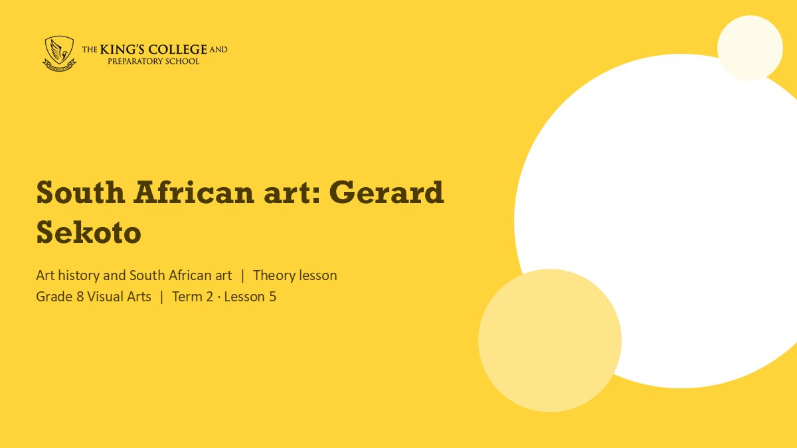

Term 2 · Lesson 5 · Theory lesson
South African art: Gerard Sekoto
Start here
Today I will
- Today I will learn about the South African artist Gerard Sekoto
- Today I will analyse a Sekoto painting using the five levels
- Today I will read the brief for the Starry Night video project
Look at this street scene. What time of day is it, and what do you think the people are doing?
Words to know
- Township art
- A name for art from the 1940s onward showing everyday life in South African townships.
- Social realism
- Realistic art that shows ordinary people's hard living and working conditions.
- Context
- The time, place and events in which an artwork was made.
- Mood
- The feeling or atmosphere an artwork creates.
Slides

Notes
Sekoto's life and township scenes; how he used colour, people and everyday life; a short visual analysis using the 5 steps. Hand out the Term 3 visual analysis video project (The Starry Night), due Term 3, Week 3.
Gerard Sekoto's story
- Early life: Born in 1913 at a mission station in what is now Mpumalanga; he trained and worked as a teacher.
- Sophiatown and beyond: From about 1939 he painted township life in Sophiatown, District Six and Eastwood, Pretoria.
- A first: His painting of yellow houses in Sophiatown was one of the first works by a black artist bought by the Johannesburg Art Gallery.
- Paris: In 1947 he left for Paris and lived in France for the rest of his life; he died there in 1993.
What to look for in Sekoto's work
- Colour: Warm, strong colours and bright light, often with expressive brushwork.
- People: Ordinary people at work, at home, playing music, walking in the street.
- Everyday life: Scenes of community, hardship and joy in the townships.
- Mood: Often warm and lively, sometimes tired or sad: look at faces and poses.
Sekoto painted ordinary life with dignity: look at the people, then at the colour.
Practical
You need: Slide or print of a Sekoto painting, journal
Group visual analysis of a Sekoto painting
- Each group gets the same painting on the board (or a print).
- Level 1: each person says their first reaction in one word.
- Level 2: list two elements and one principle you can see and their effect.
- Level 3: what is the painting about?
- Level 4: use what you learned today about Sekoto's life and time.
- Level 5: agree on a group opinion and back it up with two facts.
- Each person writes the group's notes in their own journal.
Research video project issued: visual analysis of Van Gogh's The Starry Night (due Term 3, Week 3).
Test yourself
- Name one place where Sekoto painted township life.
- What is social realism?
- When is the Starry Night video project due?
Show answers
1. Sophiatown, District Six or Eastwood (Pretoria). 2. Realistic art showing ordinary people's hard living and working conditions. 3. Term 3, Week 3.
Finished early?
Sekoto shows feeling through faces and poses. Try it yourself.
- Draw two simple stick-figure or gesture sketches of a person in your visual journal.
- Give the first a pose that looks tired or sad.
- Give the second a pose that looks lively or joyful.
- Write one word for the mood of each and the colours you would choose for it.